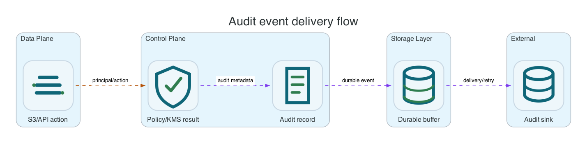

Reference / Runtime
Audit and durable event delivery.
Li9 S3 records security-relevant S3 requests, policy decisions, KMS operations, and asynchronous delivery state. Audit delivery uses durable outbox and dead-letter handling so outages are visible instead of silently dropping events.
Audit Event Sources

| Source | Events | Why It Matters |
|---|---|---|
| Gateway | S3 request metadata, principal, bucket/key, result code, latency, request ID. | For access investigations and client-visible failure analysis. |
| Policy service | Allow/deny decisions and evaluated policy context. | For explaining authorization failures. |
| KMS service | Key wrapping/unwrapping, provider failures, encryption context. | For encryption and key-use audit trails. |
| Lifecycle/replication/healing | Background object movement, restore, copy, cleanup, or repair activity. | For data movement and retention evidence. |
Delivery Model
Audit producers should write to local durable outboxes before remote delivery. If the target is unavailable, retry counters and dead-letter metrics must show the problem. Operators should monitor backlog age, retry count, and DLQ count rather than scraping raw object payloads.
OpenShift Checks
oc -n li9-s3-runtime get deploy audit-service
oc -n li9-s3-runtime logs deploy/audit-service --tail=100
oc -n li9-s3-runtime run audit-metrics-check --rm -i --restart=Never --image=curlimages/curl:8.12.1 -- \
sh -ceu 'curl -ks "${LI9_INTERNAL_SCHEME:-https}://audit-service:8080/metrics" | grep -E "audit|outbox|dlq"'Native Package Checks
| Platform | Check |
|---|---|
| Linux | journalctl -u 'li9-s3*' --since -30m and product metrics endpoint. |
| Windows | Get-EventLog -LogName Application -Source Li9S3* -Newest 50 and product metrics endpoint. |
What To Alert On
- Audit outbox oldest event age above the operational threshold.
- Dead-letter count greater than zero for security or KMS events.
- Delivery retry rate sustained after a target outage should have recovered.
- Audit service unavailable while gateway is accepting S3 traffic.